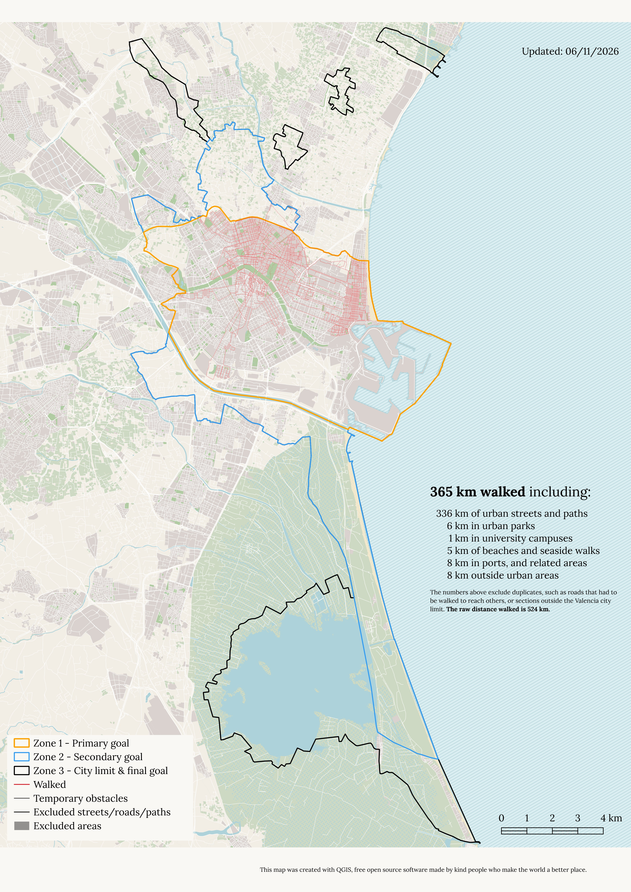

The Walking Valencia Project
Welcome to The Walking Valencia Project, a personal challenge created to improve my mental health, stay active, and explore the city where I live.
It was inspired by Matt, who walked New York, Tom, who walked the world, and wanderers like Iohan, who left us too soon. My challenge is not on the same scale as theirs, but some of the things I’ve learned from them will come with me on this journey.
Here’s a few:
The goal is just an excuse, a rational motivation to do an otherwise irrational thing. It gives me a reason to explore, wander, discover, and go on adventures, but it’s not the reason I am doing this.
I want to go far, not fast. Life is not a race and, for me, competing is not the point. I’m not chasing a record, I’m doing something for myself, by myself, and with my own rules.
Sharing the journey matters, because it keeps me motivated and it can give others the motivation to start their own journey. That’s why you are reading this.
About the goal(s):
Another thing I learned is that great journeys are often fractal. They start with a goal, and evolve in new directions, pushed by curiosity, exploration, and random chance. Mine was no exception. I started with a simple goal: "walk all the streets in Valencia", and ended up with a multi-stage challenge that keeps evolving.
If you want to see the latest map and project stats, scroll down or open the high-res version.
If you are curious about the structure of the project, its rules, and the existential questions that led to them, DON’T PANIC.
